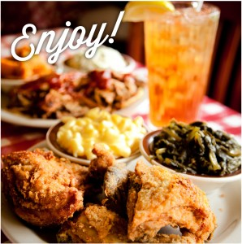

Welcome to our e-Cafe website

For over 10 years, we have been providing the best services at e-Cafe. You have to provide best when you 're making classic Southern
food.
Our cooks arrive at 6am every day to start preparing delicious meals to serve our guests.
So,take a look at our menu and come
on in to taste for yourself
what we take so much pride in preparing.
e-Cafe Menu Selections
- Breakfast Platters
- Breakfast Plates
- Supper Platters
These are just a sampling of some of our favorites:
Our world-famous biscuits are served alongside every meal all day long!
Tired of finding good restaurant. Not anymore
Here are some of our best services:
Breakfast Platters Served with Grits, Hashbrown Casserole, or Home Fried Potatoes
- Famous Loveless Country Ham (7oz) and Two Eggs with Red-eye Gravy
- Pit-Cooked Pork Barbeque and Two Eggs
- Southern Sampler Breakfast - Country Ham, Bacon, Sausage and Two Eggs
- Country Fried Steak and Eggs
- Biscuit Sampler Platter -Barbeque Biscuit, Steak Biscuit
Breakfast Plates
- Southern Omelet (3 Eggs) - Diced Country Ham, Bacon or Sausage with Onions, Peppers, Cheddar Cheese
- Garden Omelet (3 Eggs) - Diced Tomatoes, Onions, Peppers and Mushrooms with Cheddar Cheese
- Barbeque Pork Omelet (3 Eggs) - with Sauteed Onions, Cheddar Cheese and Barbeque Sauce
- Pancakes with Bacon or Sausage
- Chicken and Waffle
Supper Platters Served with a Choice of Two Side Dishes
- Loveless Fried Chicken- Same Legendary Recipe Since 1951
- Southern-Fried American-Raised Catfish - with Hushpuppies, Lemons and Tartar Sauce
- Pit-Cooked Pork Barbeque - with Cornbread Hoe Cakes
- Smoked Boneless Pork Chops - Grilled and Glazed with Loveless Peach Preserves
- Southern Sampler Platter - Pick Three: Fried Chicken, Catfish, Country Ham, Meatloaf or Pork Barbeque
Image Gallery of the Day


 Missed anything
Missed anything
< < < < < < < Services:
We have been providing services only in Nepal at different places of the country. The better water(H2O) resources are available
for the better quality of food. We have been planning to increase our services by square(2) of the recent services provided by the
e-Cafe.
Contact us: e-Cafe@ymail.com
Copyright © e-Cafe. All rights reserved.